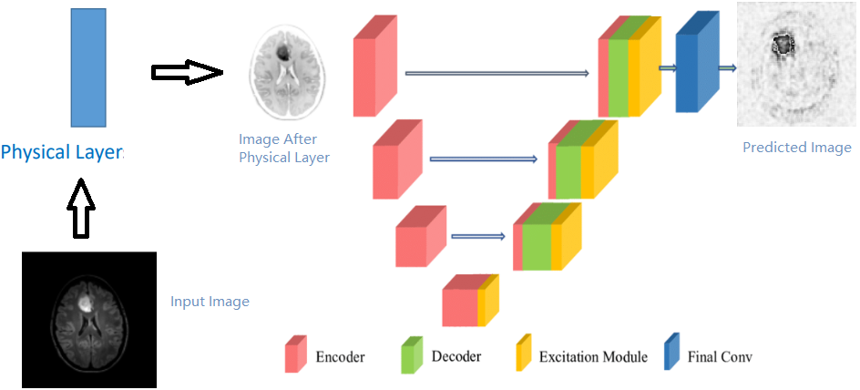
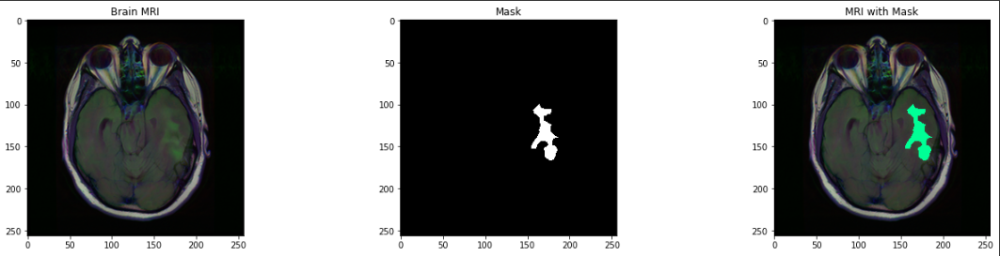

| Paper PDF |


|
In this project, we used a computer-aided diagnosing system to segments the brain lesion from Magnetic Resonance Imaging (MRI) scanned images with multiple convolutional layers to simulate the effects of physical layers.The dataset is Brain MRI segmentation from Kaggle. This dataset contains brain MR images from 110 patients from 5 institutions with 3930 brain MRI images and 3930 manual FLAIR abnormality segmentation masks. The images were obtained from The Cancer Imaging Archive (TCIA)[1]. The U-net model is adapted from MONAI frame work[2]. All images are preprocessed by multiple three-by-three convolutional layers and one one-by-one convolutional layer to simulate the illumination effects. After training, the results are evaluated by pixel accuracy metric and the perfor- mance score are calculated. For future work, there are multiple parameters such as adding gaussian kernel and changing gamma value of contrasts could be tunned to test out the performance of the model.
|
|
|
| Paper: |
| Code and Data: |